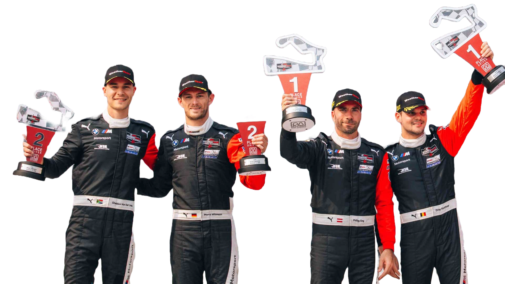

BMW M Motorsport representa el máximo nivel de rendimiento y deportividad de la marca. Nacida de la experiencia de BMW en las competencias automovilísticas, esta división se enfoca en el desarrollo de vehículos y tecnologías orientadas a la pista, sin perder la esencia de la conducción diaria.
Desde su creación, BMW M ha estado presente en las principales categorías del automovilismo mundial, logrando numerosos títulos y victorias. Sus modelos se caracterizan por motores de alto rendimiento, chasis optimizados, aerodinámica avanzada y un diseño agresivo que refleja su ADN deportivo.
BMW M Motorsport es sinónimo de precisión, potencia y pasión por las carreras, llevando la innovación del circuito a la carretera.
Desde su creación, BMW M ha estado presente en las principales categorías del automovilismo mundial, logrando numerosos títulos y victorias. Sus modelos se caracterizan por motores de alto rendimiento, chasis optimizados, aerodinámica avanzada y un diseño agresivo que refleja su ADN deportivo.
BMW M Motorsport es sinónimo de precisión, potencia y pasión por las carreras, llevando la innovación del circuito a la carretera.

